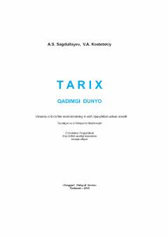

6T6-sinf o'quvchilari uchun qadimgi dunyo tarixi fanidan rasmiy darslik.
Mazkur darslik umumiy o'rta ta'lim maktablarining 6-sinf o'quvchilari uchun mo'ljallangan bo'lib, qadimgi dunyo tarixi, eng qadimgi sivilizatsiyalar, Sharq, O'rta Osiyo, Yunoniston va Rim tarixi haqida hikoya qiladi. Kitobda ibtidoiy jam jamiyatdan tortib milodiy III asrgacha bo'lgan davrdagi tarixiy jarayonlar, madaniyat va buyuk kashfiyotlar yoritilgan.